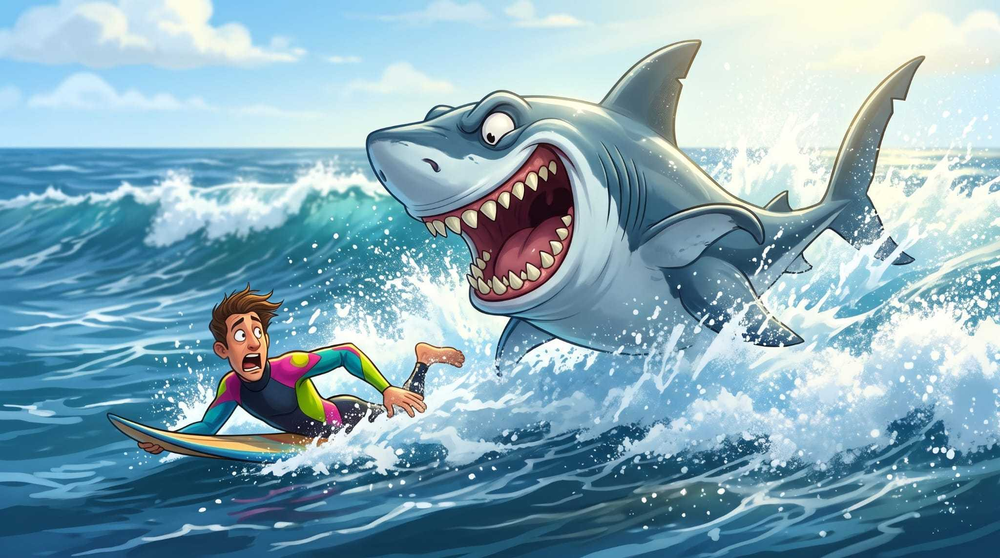

Surprising
More women in the water, fewer women bitten
Female surfers grew from about 25% to 38% (2010–2023), yet men still dominate attacks in every activity.
01 / The analysis · GSAF records since 2000
We look at recorded attacks alongside activities and water participation. The aim is to explore exposure, not to treat gender as an explanation on its own.
Back to the story01 The headline split
Among records from 2000 onward with sex recorded, men make up about four out of five listed victims.
Male2,229 81.0%
Female522 19.0%
GSAF5.csv · 2000 onward · records with sex recorded02 Circumstances matter
The cleaned records show more attacks classified as provoked among males. That label describes the recorded circumstances; it does not prove that men provoke sharks more often in comparable situations.
| Attack type | Female | Male | Total |
|---|---|---|---|
| Provoked | 20 | 205 | 225 |
| Unprovoked | 457 | 1,799 | 2,256 |
| Total classified | 477 | 2,004 | 2,481 |
Counts include records with sex and a provoked/unprovoked type after cleaning. Raw counts do not account for how many people take part in each activity or how long they spend in the water.
Our question is about exposure as much as behaviour: do men spend more time in the water, or take part more often in activities where encounters are recorded?

03 What were they doing?
Surfing and swimming lead the grouped activity chart. Male counts are higher in most categories; these are attack counts, not activity-adjusted risk rates.
04 Participation over time
The worldwide estimate rises from 25% in 2010 to about 38% in 2023.
05 A closer look at surfing
Year-to-year counts are small and uneven, rather than rising steadily alongside the estimated growth in female surfers.
There is no clear correlation here between the growth in female surfing participation and recorded attacks on female surfers. The series also use different sources and time coverage, so this comparison is suggestive, not proof of cause or safety.
06 Participation versus victims
In the Australia comparison for 2016–2022, men are 44% of swimmers but 68% of recorded shark-attack victims. Women are 56% of swimmers and 32% of victims.
The mismatch is worth investigating, but these percentages are not an individual risk rate. Time in the water, activity, location and other differences may affect the comparison.
07 What this means for JAWS Chronicles
Surprising
Female surfers grew from about 25% to 38% (2010–2023), yet men still dominate attacks in every activity.
Implications
Target young male surfers and fishers; replace the “killer shark” myth with facts about risk.
Limitations
28 swimmer attacks; participation is self-reported.
08 The fine print has fins
The male count is higher in the cleaned table, but it does not establish that men provoke attacks more often once activity and exposure are considered. A few source descriptions show why context matters:
A spearfisher prodded a shark with his speargun; the shark bit the speargun. No injury was recorded.
After a diver prodded a shark with a spear, it punctured his wetsuit. The record says there was no injury.
At an aquarium, a male staff member was bitten on the hand by a captive shark while feeding sharks; the record describes it as a minor bite.
Examples are paraphrased from the activity and injury fields in GSAF5.csv . “Provoked” is the dataset’s classification, not a judgment about a person.